置信空间策略优化
Table of Contents
1 Introduction
大部分策略优化算法都可分为以下三类：
- 策略迭代算法。在计算当前策略下的值函数和策略更新两个方面迭代。
- 策略梯度算法。从回合中取样，然后对这些样本的预计Return进行梯度更新，使得预计Return最大。
- 无导数优化算法。比如交叉熵算法。
寻常的无导数优化算法适用于很多场景，因此这种算法很容易理解和实现，而且有很好的效果。对于连续动作空间问题，无导数优化算法在学习控制策略的任务中表现很好。Gradient-Based优化方法在监督学习任务中对于带有大量参数的函数优化问题都取得了不错的成效，将这种方法引入强化学习可以为更加复杂的策略优化提供方便。
2 Preliminaries
- MDP,
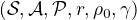
- ：随机策略
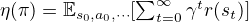
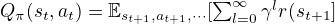
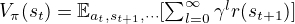
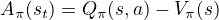
优势函数的定义为：
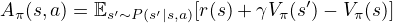
下一个策略的期望回报与当前策略的期望回报之间的关系为：
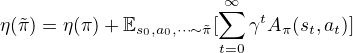
式
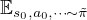
中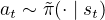
依据下式更新策略：
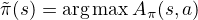
当所有
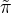
下可能到达的状态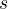
，以及它所可能采取的动作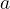
都不再使得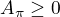
，说明收敛到了最有策略。证明：
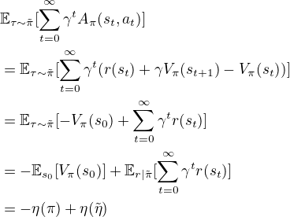
令
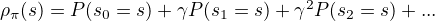
，表示在策略下带有折扣因子的访问到状态的概率。我们可以将上述等式写为：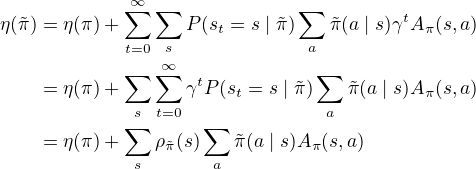
对于一个改进的策略，如果满足
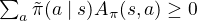
，就可以确保改进的策略表现不会比之前的策略差。但是在训练过程中，我们很难确保每个状态期望回报的优势函数都是正的，即出现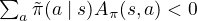
是不可避免的。 设：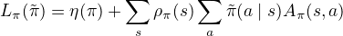
其中，使用了
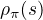
而不是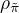
，忽略策略改变引起的状态概率改变，使得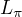
近似逼近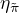
。那么可不可以这样近似呢？
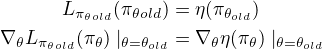
有上式可知，对于函数
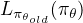
和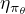
，在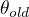
处，进行很小的更新，那么对于前者的提高相当于对后者的提高。当对于策略的改进使用以下方式时：
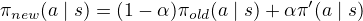
其中：
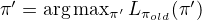
，这样，会有：
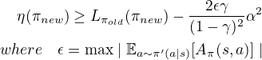
3 Monotonic Improvement Guarantee for General Stochastic Policies
上面推理已经确保了如何单调递增的更新策略，那么如何衡量和
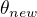
之间的距离呢？本文提出衡量更新参数距离的方法为：Total variation divergence。其定义为：
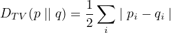
其中
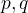
为离散随机变量概率函数，如果是连续型随机变量，为其概率密度函数，将求和改为积分。定义：
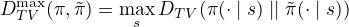
其含义为：所有状态的 Total variation divergence 中的最大值。
定理一：
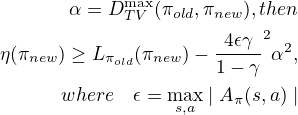
Total variation divergence 和 KL divergence 之间的关系为：
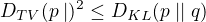
令
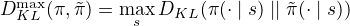
，将定理一可以写为：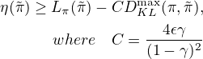
用
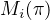
来表示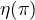
的下限，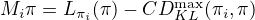
，则：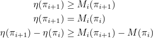
因此，每个回合优化
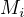
，可以确保回报 是非递减的。
是非递减的。
4 Optimization of Parameterized Policies
以下讨论的策略都是以向量 为参数的策略
为参数的策略 。集中规约以下变量：
。集中规约以下变量：
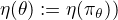
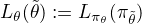
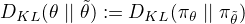
上一节说明了
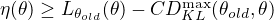
。更新的过程为，找一个使得右边式子最大的，令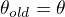
。我们的任务其实就是最大化：
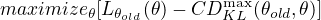
如果直接使用上诉推导出的进行优化，步长非常小，更新很慢，因此我们着手于处理这一项。通过对这一项进行约束，可以获得较大的更新步长，这种在新旧策略之间差距的约束被称为：Trust region constraint。
由于，与所有状态都有关系，因此可以使用平均值进行第二次逼近：
因此，之前的约束优化问题可以转换为：
实验结果表明，这种逼近是可行的。
5 Sample-Based Estimation of the Objective and Constraint
上一节提出了关于策略函数参数优化的问题，该问题优化了对预期总回报的估计，该估计受到每次更新时策略变化的约束。这一节提出如何使用 Monte Carlo Simulation 估计目标函数和约束条件。
将之前的优化问题展开：
此处近似三个地方：
- 使用期望近似
- 使用Q值近似
- 使用重要性采样近似之后的动作概率求和
近似之后的优化问题为：
其中的重要性采样方法有两种，一种称为“Single Path”，另一种称为“Vine”。
5.1 Single Path
使用策略生成一些轨迹。可以看出，。可以使用每个状态的衰减奖励值表示。策略梯度算法中的。
5.2 Vine
在这种采样方法中，首先取样，利用策略函数生成一些轨迹，然后从这些轨迹中取样，将这个取样集合称为“Rollout set”。对于这个集合中的每个状态，根据动作概率函数取样动作，即：，在实验中，发现采用的动作概率函数，在连续运动的问题上效果很好。
当状态下的动作空间有限时，某个状态的损失函数为：
其中，动作空间为：。在连续型动作空间中，使用重要性采样方法逼近：
其中，假设从中采样了个动作。
“Vine”方法相对于“Single Path”方法，有更小的方差，更容易计算出优势值。其缺点是，要估算值就需要很多的样本，跑到所有动作值，因此这个算法需要环境可以初始化不同的初始位置，而单路径法没有这个问题。
6 Practical Algorithm
之前我们介绍了两种方法来进行策略优化，总结起来步骤如下：
- 使用“Single Path”或者“Vine”的方法收集状态－动作对，使用蒙特卡罗方法预测 Q 值
- 通过对取样求均值，求出损失函数中的期望值
- 使用梯度方法求解
对于上诉第三步，我们通过计算 KL 散度的 Hessian 值来求解 Fisher 信息矩阵，而不是使用梯度的协方差矩阵。